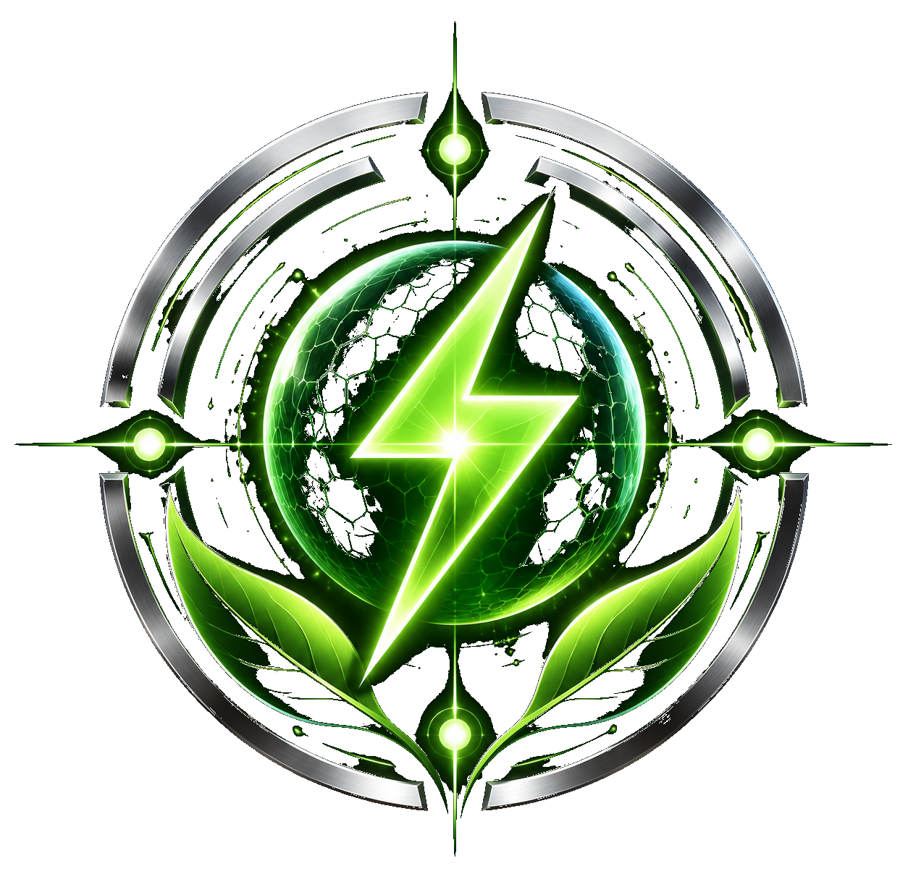
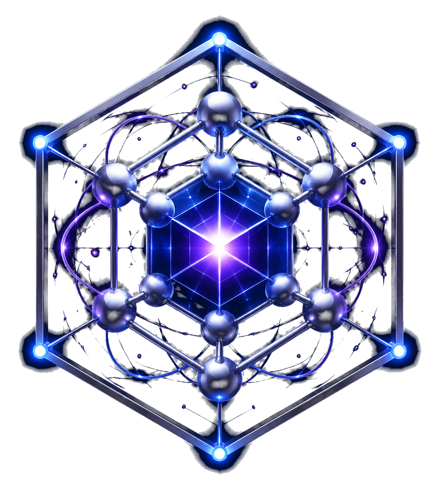
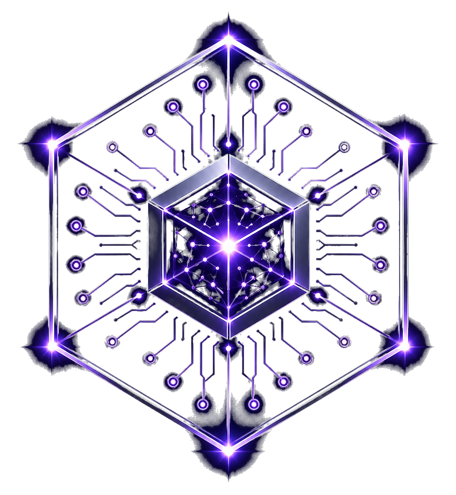

SymCore Energy
Future energy systems and theoretical field-energy concepts.
OpenResearch divisions
The divisions are organisational pathways for future exploration, not claims that these technologies already exist.

Future energy systems and theoretical field-energy concepts.
Open
Nanoscale manufacturing, materials and fabrication concepts.
OpenHealthcare, diagnostics and regenerative technology concepts.
OpenSpace systems, propulsion modelling and exploration roadmaps.
Open
AI, simulation, modelling and computational research systems.
Open